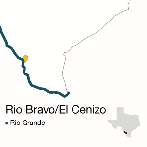

RIO BRAVO — It cost $12 million, and was expected to change the lives of hundreds of poor, mostly Hispanic families living in two hard-luck border towns.
The Rio Bravo Water Treatment Plant opened in 2006 as a state-of-the-art technological wonder, designed to distill 2.4 million gallons of water per day — clean, safe, drinkable water.
But nearly a decade later, the 8,000 residents of Rio Bravo and neighboring El Cenizo mostly still buy their drinking and cooking water from brightly colored kiosks around town. Elderly patrons at the senior care center run by Rio Bravo’s mayor drink bottled water and use the caps as lotería markers.
“Who here would be willing to drink some tap water?” Dr. Francisco Peña asked the folks at the care center last fall, before he was elected mayor. “Who is willing to drink water that comes from your public water treatment plant?” From a crowd of 30 people, there was silence.
{{ macro.photo(RIOBRAVO.PHOTO_9, RIOBRAVO.CAPTION_9, RIOBRAVO.PHOTO_CREDIT) }}The Rio Bravo plant has been fraught with problems since it opened. The sophisticated system often doesn’t work, or operators don’t know how to work it. State inspectors have repeatedly cited the plant for pumping foul water out to its customers. Eight current and former employees have been indicted for falsifying water quality records sent to the state.
And the locals still cannot trust what comes out of their faucets.
“We had to start using filtered water because we didn’t want to lose clients,” says Fausta Montoya, an employee at the Los Pasteles Bakery in Rio Bravo, which spends more than $150 a month on bottled water at Family Dollar.
Huddled on the banks of the Rio Grande about 20 miles south of Laredo, Rio Bravo and El Cenizo are former colonias — makeshift communities that sprouted up when greedy developers sold cheap land to poor families desperate for affordable housing.
Notorious developer Cecil McDonald charged as little as $50 down for property in the 1980s. When his real estate investment firm went bankrupt, the two colonias were left to figure out how to get basic services.
A series of bankruptcy settlements, state criminal action and citizen lawsuits helped get the job done. But water was particularly tricky because the shoddy treatment plant McDonald built couldn’t even provide enough water for fire hydrants.
Things were supposed to change in 2006.
Trouble From the Start
“Was it ever built correctly? We don’t know,” says Luis Perez-Garcia, the Webb county engineer who took charge of the troubled plant in the spring of 2013.
With help from the state, Webb County set out to build a top-flight plant, the first in Texas to disinfect water — pulled from one of the Rio Grande’s most polluted stretches — by pouring it over fluorescent, ultraviolet lamps. An automated computer system was supposed to sample water and ensure quality.
Perez-Garcia believes the problems came not from the plant’s design but from an inexperienced construction company trying to cut costs. Many of those who worked on the project — engineers for Webb County, who oversaw it, and staff at the Texas Water Development Board, who helped fund it — left soon after it was finished, taking knowledge of its systems with them.
{% include 'app/templates/includes/box_ad.html' %}It is unusual for Texas counties to operate water treatment plants, and Webb County has not mustered the political will and financial resources to run its facilities properly, critics say.
From the beginning, residents grumbled about smelly, strangely colored water. They increasingly complained about gastrointestinal issues and skin rashes, advocates say.
Complaints eventually reached the Texas Commission on Environmental Quality (TCEQ). But the state’s pollution enforcement agency had long been aware of the problems.
Just months after the plant’s 2006 ribbon-cutting, agency investigator Elsa Hull visited and reported that the automated computer system wasn’t working. The water’s turbidity — a key indicator of whether it is drinkable — wasn’t being measured properly.
A year later, Hull noticed something strange about the way workers at the plant were filling out monthly water quality reports they were required to submit to the TCEQ. At times, the data Webb County sent to the state was different from what Hull saw the operators write in their daily logs.
{{ macro.photo(RIOBRAVO.PHOTO_8, RIOBRAVO.CAPTION_8, RIOBRAVO.PHOTO_CREDIT) }}Officials now believe what Hull saw was no accident. In October, the Webb County district attorney’s office indicted eight current and former plant employees for allegedly falsifying the records, including Johnny Amaya, the former water utilities director and a longtime Laredo politician.
Amaya has pleaded not guilty, and a trial is expected no earlier than March, says his attorney, Fausto Sosa.
“Instead of trying to fix what was wrong with the plant, they were just reporting rosy numbers,” says Perez-Garcia, who took over as engineer in mid-2013.
In the first seven years of the plant’s operation, Webb County was cited more than 20 times by the TCEQ for failing to operate the facility properly and submitting bogus water quality reports to the state. Webb County paid several thousand dollars in fines, and most violations were eventually “resolved,” state records show.
But after receiving more than a dozen complaints about the water in just two days in the summer of 2013, Hull returned and found conditions worse than she had thought. Many key pieces of equipment were not working. Her tests of the water’s turbidity showed it was three times higher than the level at which the TCEQ requires customers to boil water before using it. Turbidity levels were shown to be high the month before, too, meaning Webb County should have issued a “boil water notice” even earlier, Hull wrote to her bosses.
Water produced by the plant also tested positive for E. coli bacteria. Even a mouthful of water contaminated with it can cause severe or bloody diarrhea. Infections from E. coli can also cause kidney damage.
“Instead of trying to fix what was wrong with the plant, they were just reporting rosy numbers.”
— Luis Perez-Garcia, Webb county engineer
Webb County was ordered to post notices urging residents of El Cenizo and Rio Bravo to boil their water. Hull sent a scathing email to Perez-Garcia. “Why did the county not issue a Boil Water Notice earlier?” she said. “Who decided to forego a BWN and not protect the customers? This cannot be excused by inexperience or the incompetence of untrained staff.”
The Laredo Health Department, which at the time provided some public health services to the area, was forced to haul in truckloads of water and go door to door teaching residents how to properly boil the tap water to avoid exposure to harmful bacteria and gastrointestinal diseases. (The department recently ended its contract with the county.)
The state health department was not involved. While it is responsible for providing services to Rio Bravo and El Cenizo, which don’t have their own health departments, a spokesman for the Texas Department of State Health Services says its office of border health has “no authority or expertise in drinking water.”
“Drinking water issues are the domain of the local health department and TCEQ,” says agency spokesman Chris Van Deusen.
After the boil-water notice went out, Webb County officials nonetheless repeatedly told residents of Rio Bravo and El Cenizo that their water was safe to drink, according to state records. Perez-Garcia asked that the boil notice be lifted just a few days after it was issued. State officials refused.
{{ macro.photo(RIOBRAVO.PHOTO_12, RIOBRAVO.CAPTION_12, RIOBRAVO.PHOTO_CREDIT) }}“The TCEQ was protecting themselves,” says Perez-Garcia, adding that he believes some of the agency’s sampling was incorrect, and that the water was safe to drink long before the boil-water notice was lifted three weeks later.
After the notice was lifted, Hull continued to find problems at the plant, including turbidity levels that were far too high, records show. In September 2013, the TCEQ slapped Webb County with a $60,000 fine for dozens of violations, and demanded that the county fix its automatic computer system and make several other major improvements within 60 days.
But the county hasn’t made much progress, causing mounting frustration at the agency and within the community.
Taking Matters Into Their Own Hands
In the 1990s, local citizens formed alliances to demand basic services. But by the time the water plant opened, those groups had dissolved, and few knew where to go for help in a community where most speak Spanish.
“There’s a lot of oppression here, everywhere you turn,” says Karla Tamez, who grew up in El Cenizo and still lives there with her mother and disabled brother. “Especially for people that don’t have documents.”
In the spring of 2013, Tamez was finishing up a nursing degree and fighting for better trash collection and sewer service in El Cenizo. A course in microbiology made her wonder what was in the water she was drinking.
“It’s drinking water. At some point, this is essential. This is a basic right.”
— Amy Johnson, attorney at RioGrande Legal Aid
Tamez gathered more than 200 signatures to form an activist committee of El Cenizo residents asking for better trash collection, water and sewer services. It was called the Comité de Ciudadanos Unidos de El Cenizo, or the Committee of United Citizens of El Cenizo.
Through internet searches, she learned how to complain to state regulators. Tamez says TCEQ investigators came to her home to test water and look at broken sewer pipes and overflows nearby. But nothing seemed to change.
Soon after the infamous 2013 boil water notice, Tamez’s committee joined with a similar group in Rio Bravo to take matters into their own hands. A few months later, with the help of RioGrande Legal Aid, a law firm that represents low-income border residents, they sued Webb County, alleging it had violated the federal Safe Drinking Water Act.
“The TCEQ hasn’t been as aggressive as you would want them to be,” says attorney Amy Johnson. The agency’s authority and resources might be limited, she says, “but it’s drinking water. At some point, this is essential. This is a basic right.”
{{ macro.photo(RIOBRAVO.PHOTO_3, RIOBRAVO.CAPTION_3, RIOBRAVO.PHOTO_CREDIT) }}The lawsuit ended in a settlement requiring the county to post drinking water quality reports online — which it finally started to do in January, several months late. And in community meetings also required by the settlement, RioGrande Legal Aid’s lawyers say they are not encouraged by progress reports on repairs at the plant.
Try, Try Again
Nearly a year and a half after the August 2013 boil-water notice, the plant’s computer system has just begun working. The facility continues to produce drinking water with turbidity levels exceeding state health standards, though not high enough to trigger another boil-water notice.
Three of the workers indicted for allegedly falsifying water quality records still work at the plant. Perez-Garcia calls them “basically low-level employees who were acting according to the orders of their administrators.” The administrators no longer work for the county.
In an interview, TCEQ officials said their options are limited. By statute, all they can do is cite public water systems — of which there are nearly 7,000 in Texas — for violations, issue fines and attempt to resolve them.
“You’ve got to look at what authority the Legislature’s given to everybody. They’re ultimately the ones responsible if they want to step in and do something,” says Steve Niemeyer, head of border affairs for the agency. “We just do what we’re told, given the authority we have.”
Even with a faulty water plant, the people of Rio Bravo are better off than other border communities, officials point out. Some public water systems are so small and remote that there’s no address to mail a notice of violation to, and nobody to answer the phone.
“We were in communication, and we still continue to be in communication with the county. They’re still talking to us, they’re working with us, to try to achieve compliance,” says David Ramirez, director of the border and Permian Basin regional offices for the TCEQ. “We can’t ask for more than that.”
Democratic state Sen. Judith Zaffirini, whose Laredo-based district includes the two communities, says the TCEQ filled its oversight role by responding to citizen complaints, investigating the plant and imposing “substantial penalties” for violations.
She acknowledges that multiple fines haven’t resolved issues at the plant, but stops short of claiming lawmakers should give the TCEQ more power.
“When you see that penalties are no longer deterrents, it’s important to look into the situation and find out why not,” Zaffirini says, adding: “This was not a problem that simply blossomed and the government stepped in. It was unscrupulous developers who caused this problem, and somehow the focus has been lost as if it were always a government issue. It wasn’t.”
Progress is slow on major repairs at the plant, which Perez-Garcia blamed on the death of a contractor. He added that finding qualified workers is a challenge because the oilfields are luring them away. The plant has been unable to fill seven open jobs, he says.
{{ macro.photo(RIOBRAVO.PHOTO_13, RIOBRAVO.CAPTION_13, RIOBRAVO.PHOTO_CREDIT) }}Last fall, residents of Rio Bravo and El Cenizo got more bad news — they will soon be paying far more for water service. County officials say they’ve long been subsidizing the plant, at a cost mostly to residents in neighboring Laredo, and can no longer afford to do so. That means the average household water bill could double, from $350 annually today to $700. On top of that, Webb County is asking for millions of dollars in loans from the state to make repairs to the treatment plant, which will raise average water bills by several hundred more dollars over time.
RioGrande Legal Aid’s lawyers say that after decades of trying to help the communities, what they’ve seen happen in Rio Bravo and El Cenizo is unique. Failed public works projects aren’t uncommon, but faked water quality reports are rare.
What’s happened “has a lot to do with the disenfranchisement and the marginalization of those communities,” says RioGrande Legal Aid attorney Israel Reyna. Webb County’s government is focused on the urban center of Laredo, he says, and few pay attention to the dozens of colonias and former colonias in the county.
New local leaders say they are hoping to win back community trust. Webb County Judge Cayetano “Tano” Tijerina, sworn in in January, says it’s time to move on from the politics that “absolutely” played a role in the “sad situation” the people of Rio Bravo and El Cenizo were left to deal with.
“I think it was very much mishandled. It was something that could’ve definitely been avoided, and that’s the hardest part,” Tijerina says. “But we’re not here to point any fingers. Now it’s how we’re going to mend the fences.”
This project was crowdfunded via Beacon Reader. To review donors to the project, click here.
Contributors
This website was designed and developed by Becca Aaronson, Emily Albracht and Ben Hasson.